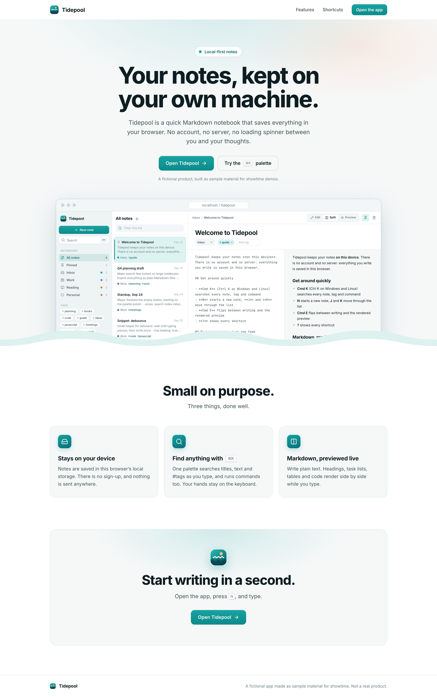

Local-first notes
Local-first notes
No account.
No server.
No loading spinner.

Search
Find anything.
Titles, text and #tags,
as you type.
Write
Markdown, previewed live.
Saved on this device
Tidepool is a fictional app, made as sample material for showtime.